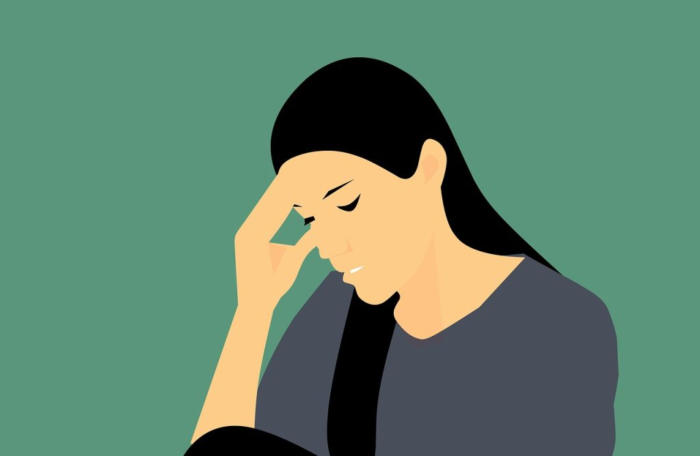
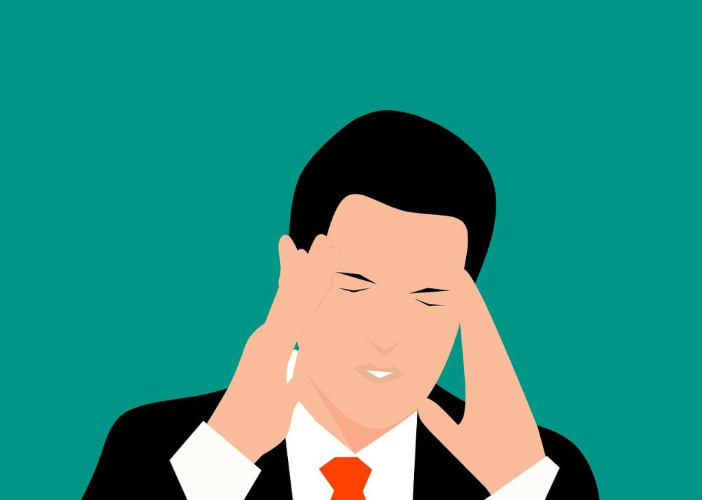

Why do you constantly wake up with headaches?
2 Comments / By admin / February 7, 2023
Do you find yourself constantly waking up with a headache? If so,
you are not alone. Headaches are a common health concern, but many
people are unaware of the reasons behind their constant occurrence.
In this blog post, we will explore some of the possible causes of
morning headaches, and provide tips for prevention and relief.
It’s important to note that the cause of your morning headache can
vary and may be influenced by several factors such as sleep
disturbance, hangover, or teeth grinding. These are some of the most
common causes.

Being unconscious may seem preferable when you have a throbbing
headache. But what happens if your headache is brought on by sleep?
Understanding the connection between sleep and headaches is crucial.
If you experience frequent headaches upon waking, it may be due to a
sleep disturbance. Keep this in mind as you explore the causes of
your headaches.
Which headache types are most prevalent in the morning?
Before exploring solutions for morning headaches, it can be helpful
to identify the type of headache you are experiencing. The human
skull is a complex organ, and different kinds of headaches can occur
in the morning. Additionally, various feelings can point to a
variety of problems.
The types of headaches you could get in the morning are as
follows:
-
Migraines
These headaches typically cause intense throbbing pain in one area
of your head and are usually accompanied by nausea and dizziness.
-
Tension-Type Headaches:
These headaches are characterized by a feeling of pressure across
your entire head, often resembling a tight band squeezing your
skull. These can hurt in various degrees, from moderate to severe,
but they are all unpleasant.
-
Clusters Headaches:
These headaches are characterized by sharp pain on one side of
your head, which can quickly disappear and return with a fury.
These can last anywhere from 15 minutes to four hours and are
often experienced after waking.
-
Hypnic Headaches:
These are less common headaches, also known as “alarm clock
headaches, which occur in the morning after waking up from a deep
sleep. They could occur once a night or every night.
Determining the type of headache you are experiencing in the morning
is the first step in finding the underlying cause.
Six Causes Of Morning Headaches
-
Insomnia and sleep problems:
There is a strong connection between headaches and sleep problems.
Lack of sleep can increase your risk of experiencing a tension
headache during the day, creating a vicious cycle. Tension
headaches caused by insomnia can make it difficult to fall asleep,
which might result in more headaches. (AHHH!). Other types of
headaches can also become more intense when you don’t get enough
sleep, amplifying your discomfort. While getting sufficient rest
is essential, it may not always provide relief for persistent
headaches, as both cluster headaches and migraines can occur even
when you are well-rested. They might also occur when the sun is
blazing and you are fully awake.
-
Sleep Apnea and Headaches:
People with sleep apnea experience brief intervals of cessation of
breathing during the night. While snoring is the most commonly
mentioned symptom of sleep apnea, headaches are also surprisingly
prevalent. It’s estimated that over half of those with sleep apnea
experience daily headaches that typically subside within four
hours. Headaches caused by sleep apnea are often described as a
pressing sensation on both sides of the head, different from the
pulsing pain of migraines that may be accompanied by nausea or
other symptoms. The good news; curing the apnea oftentimes stops
the headaches.
-
Exploding head syndrome:
The condition known as “exploding head syndrome” exists. It’s not
at all what it sounds like, no. (Goodness, please!) Exploding head
syndrome is a sleep disorder characterized by phantom explosions
or crashes experienced in transitional periods between wakefulness
and sleep. Although it is usually harmless, some individuals
report sharp headaches. The cause of this syndrome is unclear but
believed to occur when the wake systems switch off and the sleep
systems activate, similar to muscle spasms when transitioning from
being awake to asleep.
-
Oversleeping:
Achieving a balanced sleep schedule is key to avoiding headaches.
Just as insufficient sleep can lead to headaches, oversleeping can
also be a contributing factor. When you sleep for longer than
usual, it can disrupt your circadian rhythm, causing drowsiness
and headaches. It may occur if you get enough hours of sleep, but
the quality is poor.
-
Tooth Grinding:
Sleep bruxism, also known as teeth grinding, can cause headaches
by clenching the jaw and grinding teeth unconsciously. These can
result in facial and head tension, leading to a headache or
migraine in the morning.
-
Hangover:
Alcohol consumption can cause a headache the following day,
especially if you binge drink before bed. Alcohol also
significantly dehydrates the body, leading to headaches due to
lack of hydration.
How To Handle Morning Headaches
Given the complexity of sleep, it is not surprising that there is
still much to learn about how our sleep systems can malfunction and
cause headaches. However, the relationship between headaches and
sleep disturbances is often manageable. Many patients reported that
their migraines disappeared once they addressed their insomnia or
sleep apnea. If you experience frequent headaches, it is worth
investigating whether a sleep disturbance could be the underlying
cause.
Ways To Avoid Morning Headaches
-
There are several lifestyle changes you can make to reduce the
likelihood of waking up with headaches, regardless of whether your
doctor prescribes any sleep treatment or not.
-
Maintain a regular sleeping schedule; Try to go to bed and wake up
at the same time every day, which may help prevent headaches.
-
Keep track of your migraines; Take note of when you experience
headaches or migraines and identify any patterns. You can use a
journal or make notes on your phone.
-
Limit alcohol consumption; Be mindful of the amount of alcohol you
drink in the evenings, especially if your headache journal shows
that alcohol triggers headaches. Ask your doctor for resources if
you need help controlling your alcohol intake.
-
Stay hydrated and eat a healthy diet; Drink enough water
throughout the day and start your morning with a glass of water. A
healthy diet can also help prevent headaches.
When Should Morning Headaches Become a Concern?
If your morning headaches persist despite making changes to your
lifestyle, it’s recommended that you seek medical attention. Your
doctor can help identify any underlying causes and suggest
additional treatments, such as examining medications, dietary, or
muscle tension-related factors.
You may require additional treatment to address the underlying issue
if your physician determines that your headaches may be related to
insomnia, sleep apnea, or bruxism. If you experience morning
headaches three or more times a week, schedule an appointment to
discuss your options with a doctor.


Leave A Comment
Your email address will be not be Published. Required fields are marked *